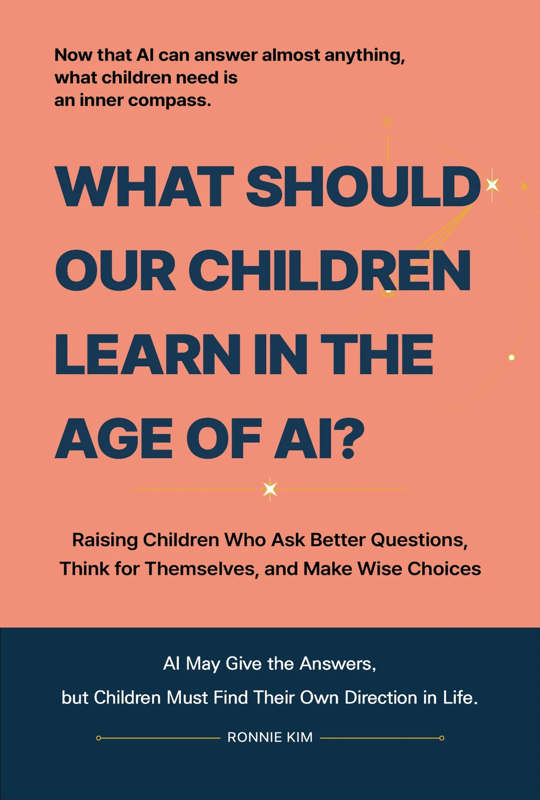

Parenting · Education · AI Literacy
AI may give the answers,
but children must find their own direction in life.
AI can explain concepts, summarize long texts, and help create assignments in seconds. This book asks a more important question: when answers are easy to obtain, what should children still learn for themselves?
Drawing on the author's experience as a software professional and a father of three, the book connects questioning, reading, speaking, AI use, career choices, resilience, empathy, and family rules through one central idea: an inner compass.
Now that AI can answer almost anything, what children need is an inner compass.
What this book helps parents think through
What should children learn?
Build a standard for choosing among coding, English, literacy, AI skills, and other priorities instead of reacting to every new trend.
How much AI should we allow?
Think through when children should begin using ChatGPT, how far AI help should go in homework, and where helpful support becomes dependence.
How do better questions grow?
Help children move beyond receiving answers by asking why, reading deeply, checking sources, and explaining ideas in their own words.
How should we prepare for changing careers?
Focus less on predicting which jobs will disappear and more on the ability to learn, choose, recover, empathize, and find direction again.
Eight Parts, Thirty-Two Chapters
- Why Parents Feel Lost in the Age of AI
- Building an Inner Compass Before Chasing Answers
- Questions, Reading, and Speaking Move the Compass
- Children Need Standards Before Trusting AI Answers
- Raising Children Who Lead AI Instead of Merely Using It
- Career Is Not a Job Title but a Direction
- What Ultimately Protects Children Is Their Humanity
- Parents Are Not Controllers but People Who Hand Children a Compass
This book is for parents who...
- Feel overwhelmed by conflicting advice about coding, English, literacy, and AI
- Want clear family standards for children's AI and ChatGPT use
- Want children to think and judge for themselves instead of copying polished answers
- Care about resilience, empathy, ethics, and relationships as much as academic performance
- Want a practical framework for making education choices without following every trend
Book Information
| Title | What Should Our Children Learn in the Age of AI? |
|---|---|
| Subtitle | Raising Children Who Ask Better Questions, Think for Themselves, and Make Wise Choices |
| Author | Ronnie Kim |
| Language | English |